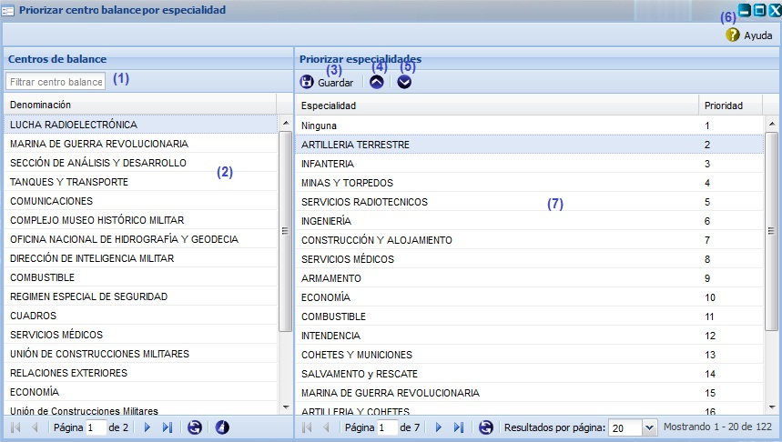

-- Priorizar centro de balance por especialidad --
Esta funcionalidad permite efectuar una priorización por especialidad, de forma tal que se pueda tener un orden por prioridad a la hora de efectuar la redistribución de los indicadores. Para llegar a esta funcionalidad se puede acceder a través de la opción Inicio\Planificación material\Balance material\Priorizar centro de balance por especialidad. A esta funcionalidad solo tiene permiso el Órgano Rector.

Figura 1. Interfaz y acciones de la funcionalidad Priorizar centro de balance por especialidad.
Las diferentes opciones que conforman la figura anterior permiten:
- Realizar un filtrado de entidades.
- Listar las entidades introducidas en el sistema.
- Guardar priorización de planes. Se debe seleccionar una especialidad y presionar el botón Guardar el sistema mostrará un mensaje de información notificando que se realizó la operación con éxito. Se puede realizar esta acción de manera rápida seleccionando la especialidad y presionando la combinación de las teclas (Alt + G).
- Incrementar prioridad.
- Decrementar prioridad.
- Mostrar la ayuda de la funcionalidad. Se puede realizar esta acción de manera rápida con la combinación de las teclas (Alt + H).
- Mostrar el listado de las especialidades pertenecientes a la entidad seleccionada del listado mostrado en la opción (2).